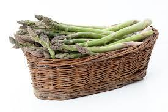

Ein perfektes Rezept für die Spargel-Saison, welches den Spargel nocheinmal aufwertet und somit zu einer leckeren Mahlzeit für die ganze Familie wird.
Rezept öffnenGlücklicherweise lautet die Antwort auf diese Frage: ja, ja und nochmals ja. Denn roher Spargel – ganz egal, ob grüner oder weißer Spargel – ist nicht nur essbar und ziemlich lecker, sondern auch noch besonders gesund. Beim Zubereiten, Kochen, Garen und Braten von Spargel gehen nämlich viele wertvolle Vitamine und Mineralien verloren. Wenn ihr Spargel roh esst, könnt ihr jedoch besonders viel davon aufnehmen, so zum Beispiel Vitamin C und Folsäure, die in rohem Spargel in hohen Konzentrationen zu finden sind. Außerdem wirkt roher Spargel entgiftend, harntreibend und enthält viel Wasser, das euch dabei hilft, euren Körper mit Flüssigkeit zu versorgen und die Nieren durchzuspülen. Und wenn euch das noch nicht überzeugt, tut es spätestens das erfrischend knackige, saftige Genusserlebnis von rohem Spargel. Probiert es mal aus und vertraut uns: Roher Spargel ist nicht giftig! Ihr solltet ihn nur gründlich abwaschen und ggf. schälen.
